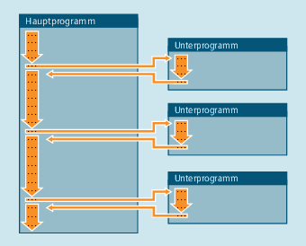

Die Bezeichnung "Unterprogramm" stammt noch aus der Zeit, als Teileprogramme fest in Haupt- und Unterprogramme unterteilt waren. Hauptprogramme waren dabei die Teileprogramme, die an der Steuerung zum Abarbeiten angewählt und dann gestartet wurden. Unterprogramme waren die Teileprogramme, die vom Hauptprogramm aus aufgerufen wurden.
Diese feste Einteilung besteht mit der heutigen SINUMERIK NC-Sprache nicht mehr. Jedes Teileprogramm kann prinzipiell als Hauptprogramm angewählt und gestartet oder als Unterprogramm von einem anderen Teileprogramm aus aufgerufen werden.
Somit wird im weiteren Verlauf mit Unterprogramm ein Teileprogramm bezeichnet, das von einem anderen Teileprogramm aus aufgerufen wird.
Wie in allen höheren Programmiersprachen werden auch in der NC-Sprache Unterprogramme dazu angewandt, um Programmteile, die mehrfach verwendet werden, in eigenständige, in sich abgeschlossene Programme auszulagern.
Unterprogramme bieten folgende Vorteile:
Bessere Übersichtlichkeit und Lesbarkeit der Programme
Höhere Qualität durch Wiederverwendung getesteter Programmteile
Möglichkeit zur Schaffung spezifischer Bearbeitungsbibliotheken
Effizientere Speicherplatznutzung
Siehe auch:
Unterprogrammnamen
Schachtelung von Unterprogrammen
Suchpfad
Formal- und Aktualparameter
Parameterübergabe
Definition eines Unterprogramms
Aufruf eines Unterprogramms